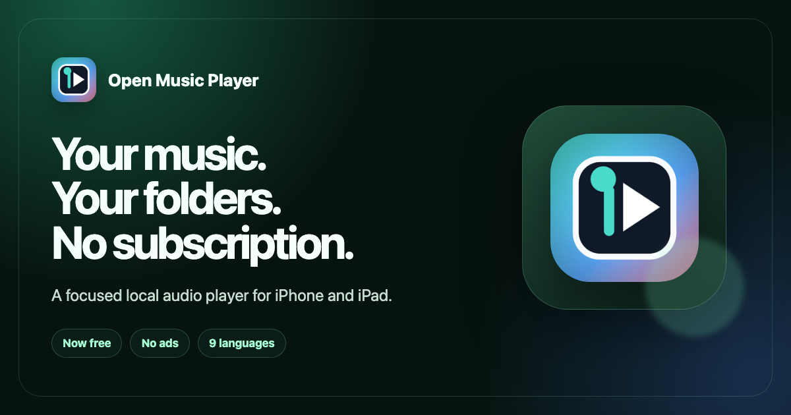

Verified product facts
Editorial description
Open Music Player is built for people who keep their own audio collection. It imports individual files and user-selected folders instead of scanning the entire device. Library tools include playlists, smart collections and a queue, alongside an equalizer, sleep timer, background playback and Lock Screen controls.
Core local playback works without an internet connection. Optional song identification can recognize nearby music through the microphone or analyze a selected audio file and requires internet access. The app does not include a music catalog; users supply their own DRM-free audio files.
Short description: A free local music player for iPhone and iPad that lets people import only the files and folders they choose — with no ads or subscription.
Downloadable assets
{kind=link}

Social card · 1200 × 630 PNG Library · iPhone screenshot
Library · iPhone screenshot
 Song identification · iPhone screenshot
Song identification · iPhone screenshot
Current screenshots show a Russian interface to demonstrate localization. Additional current English-language product captures can be requested from the media contact.
Media contact
For review requests, interviews or additional assets, contact Open Music Support.